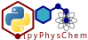

January, 2023

Des exemples commentés et généralement illustrés sont disponibles sous forme de Jupyter Notebooks
Commented and generally illustrated examples are available in the form of Jupyter Notebooks
Il faut lire le fichier TOC.ipynb, qui renvoie vers des sous-thèmes. Chaque sous-thème est introduit par les objectifs de ces TP, ainsi qu’une table des matières qui permet d’accéder aux cours/TP et aux exercices.
Pré-requis : des notions très élémentaires d’algorithmique (variables, tests conditionnels, boucles). 🤔 Vous voulez rafraîchir vos connaissances et renforcer vos acquis ? Le notebook PPCL.ipynb est fait pour ça. Il est un peu long, mais il en vaut la peine 😊. Vous pouvez peut-être même vous lancer sans aucune connaissance algorithmique de base. C’est à vous de voir si cela vous suffit.💪💪🏼💪🏿
Read the TOC.ipynb file, which points to subtopics. Each subtopic is introduced by the goals of the course, as well as a table of contents that allows access to the courses/tutorials and exercises.
Prerequisite : very basic notions of algorithmic (variables, conditional tests, loops). 🤔 Do you want to refresh your knowledge and reinforce your skills? This is what the PPCL.ipynb notebook is for. It’s a bit long, but it’s worth the effort 😊. You may even be able to get started without any basic algorithmic knowledge. It’s up to you to see if that’s enough for you.💪💪🏼💪🏿
Il faut d’abord avoir installé Jupyter ainsi qu’une distribution python sur son PC.
La solution la plus simple est d’installer et utiliser Anaconda, qui est une distribution libre et open source du langage de programmation Python :
First install Jupyter as well as a Python distribution on your PC.
A simple and easy possibility is to install Anaconda, a free and opensource distribution of the Python programming language:
Ce n’est pas la façon de faire qui est recommandée, bien que ce soit la plus simple. Essayez plutôt le clonage (voir paragraphe “cloner le dépôt” ci-dessous 👇) / It is not the recommended way, although it is the simplest. Try clone the repository instead (see the “clone repository” subsection below 👇)
Téléchargez l’archive zip / Download the zip archive
C’est la méthode recommandée, car elle facilite la mise à jour des notebooks / This is the recommended way, given the ease of updating notebooks
Ouvrez un terminal. Depuis le répertoire où vous voulez installer les notebooks, tapez la commande : / Open a terminal. Go into the folder in which the notebooks will be installed, and type:
git clone https://github.com/rpoteau/pyPhysChem.gitVous avez maintenant un répertoire pyPhysChem dans le
répertoire depuis lequel vous avez lancé la commande git /
You now have a pyPhysChem folder installed in the folder
from which the git command was ran
pyPhysChem étant un projet en évolution, il faut régulièrement vérifier
qu’il n’y a pas de mise à jour. La commande suivante met si nécessaire à
jour le contenu du répertoire Pytchem / Pytchem being a
work-in-progress project, it is necessary to regularly check for a
possible update. The content of the pyPhysChem folder is
updated by using the following command:
allez d’abord dans le répertoire pyPhysChem / first go into the
pyPhysChem folder
puis tapez / and then enter
git pull origin mainVous devez télécharger et installer l’application git. Ne changez aucune option par défaut, à l’exception de l’éditeur Nano au lieu de vi / You must download and install the git application. Do not change any default options, except for the Nano editor instead of vi
Exécutez ensuite l’application Git GUI. Ça devrait ressembler à ça : / Then run the Git GUI application. It should look like:

Cliquez sur “Clone existing repository”. Collez l’adresse https://github.com/rpoteau/pyPhysChem.git dans le champ “Source location”. Choisissez un emplacement où cloner pyPhysChem dans “Target Directory”, ajoutez pyPhysChem au chemin. Ce répertoire va être créé par Git GUI / Click on “Clone existing repository”. Paste the https://github.com/rpoteau/pyPhysChem.git in the “Source location” field. Choose the local target folder. Add pyPhysChem to the pathway. This folder will be created by Git GUI

Cliquez sur “Clone”. Patientez. À la fin de l’installation, vous allez voir cette fenêtre : / Click on “Clone”. Wait. This window will appear after the installation is completed:

Vous pouvez fermer cette application / You can close this application
cd chemin d'accès) dans le répertoire
qui contient pyPhysChem / Navigate to the folder that contains pyPhysChem
(cd pathway)jupyter-lab TOC.ipynbLe plus simple est de passer par Anaconda Navigator, puis de sélectionner JupyterLab / The easiest way is to select JupyterLab from Anaconda Navigator

Il ne reste plus qu’à naviguer jusqu’au répertoire qui contient
pyPhysChem, et à charger la table des matières intitulée
TOC.ipynb / All that remains is to navigate to the
directory that contains pyPhysChem, and load the table of contents entitled
TOC.ipynb.

Vous devez installer les bibliothèques suivantes dans votre environnement Python / You must install the following libraries in your Python environment: